CL — Chile
The main impact of a 200 basis-point (2.00 percentage-point) rise in United States interest rates on Chile is a 0.06% drop in GDP by the 12th quarter — a limited spillover, consistent with Chile sitting in the "minimal" band and ranking ninth by absolute GDP effect among the countries in this run. The shock is a US monetary tightening, and Chile's response is the model's estimated deviation from its own baseline, not a forecast. The path builds gradually: GDP is essentially flat in Q1 (−0.0018%), deepens through the middle quarters, peaks at −0.0645% in Q12, and is still −0.0227% below baseline at Q20. That is a small, persistent drag rather than a sharp recession.
Demand and trade. Household consumption (Consumption) falls steadily, reaching −0.0315% around Q13 and still −0.0135% at Q20, as tighter external conditions and weaker real incomes weigh on spending. Private investment (Investment) is hit much harder, peaking at −0.2351% in Q9 before fading to −0.0052% by Q20 — the cost-of-capital channel is the dominant domestic drag. Net exports (the trade balance) actually improve, peaking at +0.0755% in Q9 and remaining +0.0338% at Q20, because the currency weakens and competitiveness improves. Government spending (Gov Spending) edges up only marginally, peaking at +0.0058% in Q11, a near-trivial stabilizer. Government debt (Gov Debt) drifts lower relative to baseline, reaching −0.0379% around Q18, reflecting the weaker nominal economy rather than an active fiscal consolidation.
External / FX. The real exchange rate (Currency Strength) depreciates — the series rises to +0.5283% by Q9, meaning the peso is weaker in real terms, and it stays +0.2363% above baseline at Q20. That weaker currency lines up exactly with the net-exports improvement: a more competitive real exchange rate supports the trade balance, which is the one component of demand pushing the other way against the investment and consumption drag.
Labour. Employment falls gradually, peaking at −0.0446% around Q16 and still −0.0343% below baseline at Q20. Unemployment rises in parallel, peaking at +0.0206 percentage points in Q14 and remaining +0.0139 points at Q20 — a modest but durable deterioration in the labour market. Real wages initially rise, peaking at +0.0642% in Q11, because inflation cools faster than nominal wages adjust; that gain erodes and turns slightly negative by Q19, ending at −0.0115% in Q20.
Prices. CPI inflation rises modestly at first, peaking at +0.028 percentage points in Q2, then falls below baseline from Q10 onward and ends at −0.0074 points in Q20. Domestic inflation follows the same shape, peaking at +0.0196 points in Q2 and turning negative around Q10, ending at −0.0052 points. Firms' marginal cost falls steadily, peaking at −0.0385% in Q12 and still −0.0136% below baseline at Q20, consistent with weaker demand and a softer cost environment.
Financial conditions. The local policy rate rises slightly, peaking at +0.0579 percentage points in Q8, then falls below baseline from Q13 and ends at −0.0344 points in Q20 as the domestic economy weakens. Government 2-year yields rise early, peaking at +0.0524 points in Q3, then turn negative from Q10 and end at −0.0266 points. The 5-year yield peaks at −0.0233 points in Q14, and the 10-year yield drifts down to −0.0141 points by Q13 — the curve inverts relative to the initial impulse as growth expectations weaken. Bond prices (Bond Price) fall to −0.2412% by Q8, then recover and turn positive from Q14, ending +0.1433% above baseline. Equity prices (Equity Index) fall hardest, peaking at −0.3938% in Q8 and still −0.0625% below baseline at Q20. Tobin's Q (the value of installed capital) falls to −0.1645% in Q9 and recovers to −0.0036% by Q20. House prices decline persistently, peaking at −0.0746% in Q17 and still −0.0709% below baseline at Q20. Bank credit supply contracts only slightly, peaking at −0.0072% in Q17, and lending spreads widen by a trivial +0.0002 percentage points — financial frictions are barely binding in this calibration.
Sectoral and capital. Manufacturing GDP is the hardest-hit sector, peaking at −0.1631% in Q9 and still −0.0718% below baseline at Q20, reflecting its greater sensitivity to investment and external demand. Services GDP falls much less, peaking at −0.039% in Q12 and ending at −0.0137% in Q20. The capital stock declines slowly and monotonically, reaching −0.0125% by Q20 — the investment slump accumulates into a smaller productive capacity over time.
Timing. The GDP hit is largest in Q12 at −0.0645%, and it has not fully faded by Q20, where it remains −0.0227% below baseline. The peak is late and the decay is slow: the shock works through investment, the capital stock, and the labour market with long lags, so the Chilean economy absorbs the US tightening gradually rather than in a single quarter.
Close. These are model impulse responses — deviations from Chile's own baseline under a 200bp US rate rise — not forecasts and not trading advice. They describe the estimated transmission channels, with the currency and net exports offsetting part of the investment-led drag, leaving a small but persistent negative GDP effect.
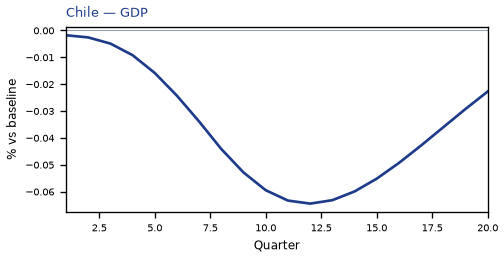
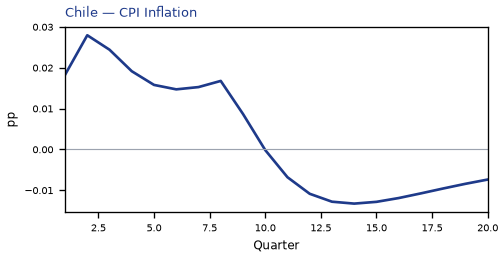
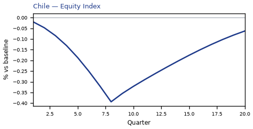
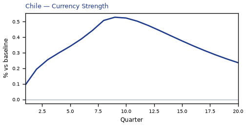
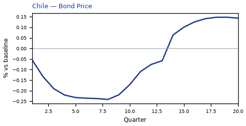
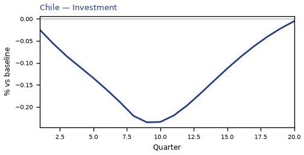
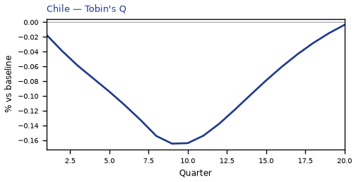
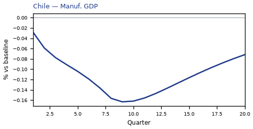
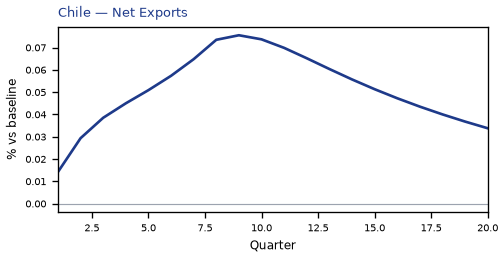
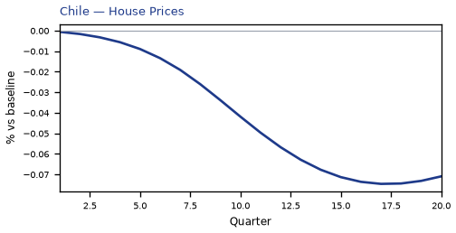
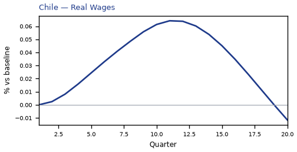

source=live · global_macro_v5 · contract v6 · Q1–Q20 JSON · not financial advice